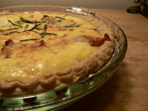

Potato, bacon, and Gruyère quiche

We almost went out tonight, but it was wintry-mixing and nasty outside, so I decided to make yet another quiche! Emily was right, you can just throw in whatever you have around. Tonight, that wasn’t much. But I did have bacon and Gruyère, and onions and potatoes, and I did have a leftover shell. So I made an Alsatian-themed quiche, sautéing the potatoes in onions in the bacon grease then deglazing with some apple eau-de-vie to add sweetness. I added fresh rosemary at the last minute for freshness and color.
I will definitely continue to order these shells, and eventually learn to quickly make my own, as I intend to become the quiche master of lower Manhattan.
Comments
Tonight’s quiche reminds me a bit of our famous pierogie pizza here in Pittsburgh. I tried to find a recipe for it on the web I could link to but couldn’t find one I liked; I found an obscure Australian website last year with thousands of recipes on it, including the quintessential pierogie pizza, that I have been making for the family, but it seems to have vanished.
One question—did you spread the pie crust with Dijon mustard, and did you do it before or after partially baking it?
I did after partially baking it, with whole-grain mustard.
I miss pierogie pizza! I miss the Church Brew Works!
This quiche looks DELICIOUS! I am so impressed with your quickly-learned quiche skills!
And so glad the mustard worked out.
Looks great!! {from the quiche master of Upper Manhattan!-)
You’re the quiche queen of the tri-state area!
Add a comment